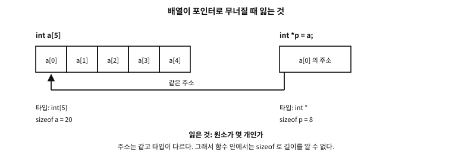
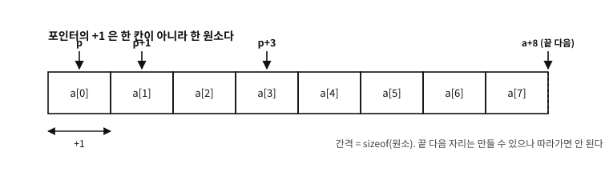

38 배열
먼저 알아야 할 것
돌아보기
11장에서 캐시 라인은 “이웃 예순네 칸을 상자째” 나른다고 했고, 배열(array)을 차례로 훑는 코드가 빠른 이유가 그것이라 했다. 그러면 “배열”이란 기억의 눈으로 정확히 무엇인가?
답. 같은 타입의 칸들이 빈틈없이 이웃하여 늘어선 것 — 그것이 전부다. int a[5]는 int 다섯 개가 연속된 주소에 나란히 놓인 것이고, 그래서 첫 칸의 주소와 타입만 알면 나머지 위치가 전부 계산된다(번 원소 = 시작 주소 + 칸 크기). 이 “계산 가능한 이웃”이라는 성질이 배열의 힘(즉시 접근, 캐시 친화)이자 위험(경계 계산 착오)의 뿌리다.
이 장이 끝나면
char line[100] 외상이 여기서 청산된다.이 장에서 답할 질문
- 왜 이렇게 정했는가 — 그냥 바이트 단위로 더하게 두면 더 단순하지 않은가?
- 그러면 포인터 매개변수는 전부
[static 1]로 적는 편이 좋은가? - 경계를 어기면 컴파일러가 잡아 주지 않는가?
38.1 선언, 접근, 순회
examples/ch38/arr.c
#include <stdio.h>
int main(void)
{
int a[5] = {3, 1, 4, 1, 5};
int sum = 0;
for (int i = 0; i < 5; i += 1) {
sum += a[i];
}
printf("sum: %d\n", sum);
printf("a[2] = %d, *(a + 2) = %d\n", a[2], *(a + 2));
int *p = a; /* 배열 이름이 첫 원소의 주소로 무너진다 */
printf("sizeof a = %zu, sizeof p = %zu\n", sizeof a, sizeof p);
return 0;
}
실행 결과
sum: 14
a[2] = 4, *(a + 2) = 4
sizeof a = 20, sizeof p = 8
int a[5] = {3, 1, 4, 1, 5}; — 타입, 이름, 칸 수, 그리고 중괄호 초기화. 접근은 a[i]이고 번호는 0부터다(첫 원소가 a[0], 마지막이 a[4]). 0부터 세는 이유는 위의 deepqa가 이미 답했다 — a[i]의 정체가 “시작에서 칸 떨어진 곳”이라서, 첫 원소는 떨어진 거리가 0이다.
38.2 배열과 포인터 — 무너짐의 진실
시연의 뒷부분이 이 장의 심장이다. C에서 가장 많은 혼란을 낳은 관계 — 배열과 포인터 — 를 정확히 정리한다.
규칙: 배열의 이름은 대부분의 문맥에서 “첫 원소의 주소”로 무너진다 (decay). 무너진 뒤에 남는 것과 잃는 것을 나란히 놓으면 이렇다.

그림 38.1 — 주소는 같고 타입이 다르다 — 그래서 원소가 몇 개인지가 사라진다.
int *p = a;가 합법인 이유다 — a가 &a[0]이라는 포인터 값으로 읽힌 것이다. 그리고 a[i]라는 표기 자체가 사실 *(a + i)의 당의정이다 — 포인터에 정수를 더하면 “그 타입 크기만큼 칸 옆”의 주소가 되고(포인터 산술 — 37장의 규칙들이 여기 걸린다), 그것을 역참조한 것이 인덱스 접근이다. 시연의 a[2] == *(a + 2)가 그 확인이다.
흔한 오해. “배열은 포인터다”
이 유명한 문장은 틀렸다 — 무너짐이 하도 자주 일어나서 생긴 착시다. 배열은 칸 다섯 개짜리 기억 그 자체이고, 포인터는 주소 하나를 담는 다른 변수(variable)다. 시연의 마지막 줄이 결정적 증거다:sizeof a는 20 (int 5칸의 총 크기), sizeof p는 8(주소 하나의 크기, 35장). 무너짐이 일어나지 않는 대표 문맥이 바로 sizeof라서 이 차이가 보인다 — 25장의 fgets(line, sizeof line, stdin)이 그릇 크기를 옳게 잰 것도 이 덕분 이다. 한 가지 파급이 중요하다: 배열을 함수에 “넘기면” 무너진 주소만 복사되므로(33장), 함수 쪽에서는 sizeof로 크기를 알 수 없다 — 그래서 C 함수는 배열과 길이를 별도 인자로 함께 받는 것이 관행이다. 9장에서 본 “길이를 데이터 곁에 두는” 표현 방식들의 문제의식이, C 함수 경계에서 이렇게 재현된다.38.3 포인터의 덧셈은 보통의 덧셈이 아니다
방금 a[i]가 *(a + i)라고 했다. 그러면 a + 2는 정확히 무슨 값인가? 주소에 2를 더한 것이라면 “2바이트 옆”이어야 할 텐데, 실제로는 int 두 칸 옆, 곧 8바이트 옆이다. 포인터 산술은 가리키는 타입의 크기를 곱해서 움직인다.

그림 38.2 — +1 이 건너뛰는 폭은 가리키는 타입의 크기다.
이 규칙을 정확히 적으면 이렇다.
| 수식 | 뜻 | 결과 타입 |
|---|---|---|
p + n, n + p | p가 가리키는 타입 크기의 n배만큼 앞으로 | p와 같은 포인터 타입 |
p - n | 같은 크기만큼 뒤로 | 같음 |
p - q | 두 주소 사이에 원소가 몇 개 들어가는가 | ptrdiff_t(부호 있는 정수) |
p++, ++p, p += n | 위와 같은 규칙으로 옮긴 뒤 대입 | 같음 |
표 38.1
즉 포인터에 정수를 더하는 일은 “주소라는 수에 그 수를 더하기”가 아니라 “칸 단위로 세기”다. char *에서만 1이 1바이트이고, int *에서 1은 4바이트, struct point *에서 1은 그 구조체 하나의 크기다.
문. 왜 이렇게 정했는가 — 그냥 바이트 단위로 더하게 두면 더 단순하지 않은가?
답. 세 가지 이유가 겹친다.
첫째, 이것이 배열을 문법 없이 만들어 준다. a[i]를 *(a + i)로 정의할 수 있는 것은 덧셈이 원소 단위이기 때문이다. 만약 바이트 단위였다면 배열 접근을 쓸 때마다 *(a + i * sizeof *a)라고 적어야 했을 것이고, 원소 타입을 바꿀 때마다 모든 접근을 고쳐야 했을 것이다. C가 배열 접근을 위한 특별한 기계장치를 두지 않고도 배열을 갖는 비결이 이 규칙 하나다.
둘째, 타입이 이미 크기를 알고 있다. 5장의 후렴구를 기억하자 — 기억에는 경계가 없고, 몇 바이트를 한 덩어리로 볼지는 읽는 쪽이 정한다. 포인터의 타입이 바로 그 “읽는 쪽의 결정”이다. 그 결정을 이미 들고 있는 값에게 이동까지 맡기는 것이 자연스럽다.
셋째, 기계도 그렇게 움직인다. 대부분의 CPU에 “기준 주소 + 인덱스 × 크기”를 한 번에 계산하는 주소 지정 방식이 있다. 원소 단위 산술은 그 명령에 그대로 대응한다 — 4장에서 본 “C는 기계를 감추지 않았다”의 또 다른 사례다.
examples/ch38/ptrmath.c
/* 포인터 산술은 바이트가 아니라 "칸" 단위로 움직인다. */
#include <stddef.h>
#include <stdio.h>
struct point { int x, y; };
int main(void)
{
char c[4];
int a[8] = {0, 10, 20, 30, 40, 50, 60, 70};
double d[4];
struct point s[4];
/* ── ① 같은 +1 인데 움직인 폭이 다르다 ─────────────────────── */
printf("타입 sizeof (p+1) - p 바이트\n");
printf("char %2zu %td\n",
sizeof c[0], (char *)(c + 1) - (char *)c);
printf("int %2zu %td\n",
sizeof a[0], (char *)(a + 1) - (char *)a);
printf("double %2zu %td\n",
sizeof d[0], (char *)(d + 1) - (char *)d);
printf("struct point %2zu %td\n",
sizeof s[0], (char *)(s + 1) - (char *)s);
/* 바이트 단위로 움직이려면 문자 포인터로 캐스트한다 */
int *p = a;
printf("\np + 1 은 %d 을 가리킨다\n", *(p + 1));
printf("(char*)p + 1 은 a[0] 의 두 번째 바이트다 (역참조하면 값이 아니라 표현의 조각)\n");
/* ── ② 포인터 뺄셈은 원소 개수를 준다 ──────────────────────── */
ptrdiff_t gap = &a[4] - &a[1];
printf("\n&a[4] - &a[1] = %td (바이트가 아니라 원소 수)\n", gap);
printf("바이트로 세면 = %td\n",
(char *)&a[4] - (char *)&a[1]);
/* ── ③ 첨자는 산술의 당의정이다 ────────────────────────────── */
printf("\na[3] = %d, *(a + 3) = %d, *(3 + a) = %d, 3[a] = %d\n",
a[3], *(a + 3), *(3 + a), 3[a]);
/* ── ④ 마지막 다음 자리는 만들어도 되지만 따라가면 안 된다 ─── */
int *end = a + 8; /* one-past-the-end — 합법 */
printf("\n끝 다음 주소까지의 원소 수: %td (역참조는 하지 않는다)\n", end - a);
int count = 0;
for (int *q = a; q != end; q++) /* 표준 관용구: != end 로 멈춘다 */
count += (*q != 0);
printf("0 이 아닌 원소: %d 개\n", count);
return 0;
}
실행 결과
타입 sizeof (p+1) - p 바이트
char 1 1
int 4 4
double 8 8
struct point 8 8
p + 1 은 10 을 가리킨다
(char*)p + 1 은 a[0] 의 두 번째 바이트다 (역참조하면 값이 아니라 표현의 조각)
&a[4] - &a[1] = 3 (바이트가 아니라 원소 수)
바이트로 세면 = 12
a[3] = 30, *(a + 3) = 30, *(3 + a) = 30, 3[a] = 30
끝 다음 주소까지의 원소 수: 8 (역참조는 하지 않는다)
0 이 아닌 원소: 7 개
출력의 첫 묶음이 규칙의 전부를 보여 준다. 같은 + 1인데 주소가 움직인 폭이 타입마다 다르고, 그 폭은 정확히 sizeof와 같다. 그래서 (char *)p + 1과 p + 1은 서로 다른 자리를 가리킨다 — 바이트 단위로 움직이고 싶을 때 문자 포인터로 캐스트하는 관용구(87장의 뷰가 그렇게 한다)가 여기서 나온다.
두 번째 묶음은 뺄셈이다. &a[4] - &a[1]이 3이지 12가 아니라는 것 — 포인터 뺄셈은 바이트가 아니라 원소 개수를 준다. 그리고 그 결과의 타입이 ptrdiff_t인 이유도 여기 있다: 뒤에서 앞을 빼면 음수가 나올 수 있으므로 부호 있는 타입이어야 한다.
38.3.1 어디까지 허용되는가 — 산술의 계약
포인터 산술에는 37장의 프로버넌스가 그대로 걸린다. 규칙을 실무 문장으로 줄이면 이렇다.
| 하는 일 | 판정 |
|---|---|
| 배열 안의 원소를 가리키는 포인터를 배열 안에서 움직이기 | 정상 |
| 배열의 마지막 다음 자리(one-past-the-end)를 가리키기 | 정상 — 다만 역참조는 금지 |
| 그보다 더 밖으로 나간 주소를 만들기 | 계약 밖 — 따라가지 않고 계산만 해도 그렇다 |
배열이 아닌 단일 객체에 + 1 | 정상 — 길이 1짜리 배열로 취급된다 |
| 서로 다른 배열의 포인터끼리 빼기 | 계약 밖 |
서로 다른 배열의 포인터끼리 <로 크기 비교 | 계약 밖(상등 비교 ==는 허용) |
void *에 정수 더하기 | 표준에는 없다 — gcc·clang의 확장(1바이트 단위) |
표 38.2
“만들기만 해도 계약 밖”이 낯설게 들리지만, 이것이 루프의 끝 조건을 쓰는 법을 바꾼다. p <= a + n은 마지막 다음까지만 가므로 안전하지만, p < a + n + 1은 그보다 한 칸 더 나간 주소를 계산하므로 계약 밖이다. 뒤에서 앞으로 훑는 루프를 for (p = a + n - 1; p >= a - 1; p--)처럼 쓰는 것도 같은 이유로 위험하다 — a - 1은 배열 앞의 주소이고, 그것을 계산하는 순간 이미 계약 밖이다.
반례. 배열 앞으로 한 칸 나가는 역방향 루프
for (int *p = a + n - 1; p >= a - 1; p--) /* a - 1 을 만든다 — 계약 밖 */
...같은 일을 하는 안전한 형태는 인덱스를 쓰거나, 끝 조건을 배열 안에 두는 것이다.
for (size_t i = n; i-- > 0; ) /* i 가 0 일 때 종료 — 주소를 만들지 않는다 */
use(a[i]);실제 사례. 최적화가 이 규칙을 실제로 쓴다
“만들기만 해도 계약 밖”이라는 규칙이 지나쳐 보이지만, 컴파일러는 이 약속을 근거로 코드를 줄인다.p가 배열 a 안을 가리킨다는 것이 보장되면 p >= a는 언제나 참이므로 검사 자체를 지워도 된다 — 13장에서 본 최적화의 논리 그대로다. 실제로 이런 검사를 지우는 최적화 때문에 “내 컴퓨터에서는 잘 돌던” 경계 검사가 배포판에서 사라지는 사고가 여러 번 보고됐다.38.4 매개변수의 배열은 배열이 아니다
함수 매개변수 자리에서는 규칙이 하나 더 있다. 배열로 선언해도 컴파일러가 포인터로 바꿔 버린다. 그래서 다음 셋은 컴파일러에게 완전히 같은 선언이다.
void f(int *a);
void f(int a[]);
void f(int a[10]); /* 10 은 문서일 뿐, 검사하지 않는다 */여러 겹 배열이라면 가장 바깥(왼쪽 첫) 차원만 벗겨진다. 안쪽 차원은 타입의 일부로 남는다.
void g(int m[3][4]); /* 실제 타입은 int (*m)[4] */
void h(int c[2][3][4]);/* 실제 타입은 int (*c)[3][4] */이 사실이 눈에 보이는 자리가 셋이다.
examples/ch38/param.c
#include <stdio.h>
/* 세 선언은 컴파일러에게 완전히 같은 것이다: 전부 int * 다.
(매개변수 이름에 직접 sizeof 를 쓰면 gcc 가 경고하므로,
같은 타입의 지역 변수로 한 번 받아 크기를 잰다) */
static void by_ptr(int *a) { int *p = a; printf(" int *a : sizeof = %zu\n", sizeof p); }
static void by_arr(int a[]) { int *p = a; printf(" int a[] : sizeof = %zu\n", sizeof p); }
static void by_size(int a[10]) { int *p = a; printf(" int a[10] : sizeof = %zu\n", sizeof p); }
/* 매개변수는 그냥 포인터 변수라서 다른 주소를 대입할 수도 있다 */
static int second_of(int a[10])
{
a = a + 1; /* 배열이라면 불가능하다 — 배열 이름에는 대입할 수 없다 */
return a[0];
}
/* 2차원: 벗겨지는 것은 가장 바깥(왼쪽 첫) 차원뿐이다.
int m[3][4] -> int (*m)[4] */
static void by_2d(int m[3][4])
{
int (*p)[4] = m; /* 매개변수의 진짜 타입이 이것이다 */
printf(" int m[3][4] : sizeof = %zu (포인터), sizeof p[0] = %zu (행 하나)\n",
sizeof p, sizeof p[0]);
printf(" m[1][2] = %d\n", m[1][2]);
}
int main(void)
{
int arr[10] = {0,1,2,3,4,5,6,7,8,9};
int grid[3][4] = { {0,1,2,3}, {4,5,6,7}, {8,9,10,11} };
printf("호출자 쪽 (진짜 배열):\n");
printf(" int arr[10] : sizeof = %zu\n", sizeof arr);
printf(" int grid[3][4] : sizeof = %zu, sizeof grid[0] = %zu\n",
sizeof grid, sizeof grid[0]);
printf("함수 안 (전부 포인터):\n");
by_ptr(arr);
by_arr(arr);
by_size(arr);
by_2d(grid);
printf("매개변수에 대입: second_of(arr) = %d\n", second_of(arr));
printf("원본은 그대로 : arr[0] = %d\n", arr[0]);
return 0;
}
실행 결과
호출자 쪽 (진짜 배열):
int arr[10] : sizeof = 40
int grid[3][4] : sizeof = 48, sizeof grid[0] = 16
함수 안 (전부 포인터):
int *a : sizeof = 8
int a[] : sizeof = 8
int a[10] : sizeof = 8
int m[3][4] : sizeof = 8 (포인터), sizeof p[0] = 16 (행 하나)
m[1][2] = 6
매개변수에 대입: second_of(arr) = 1
원본은 그대로 : arr[0] = 0
① sizeof의 값이 다르다. 호출자 쪽 arr는 진짜 배열이라 40바이트 (int 10개)이지만, 함수 안에서는 8바이트 — 포인터 하나의 크기다. 그래서 sizeof a / sizeof a[0]으로 원소 개수를 세는 관용구는 함수 안에서 통하지 않는다. 개수는 따로 받아야 한다.
gcc는 이 실수를 실제로 짚어 준다. 예제를 처음 쓸 때 받은 진단이다.
error: ‘sizeof’ on array function parameter ‘a’ will return size of ‘int *’
[-Werror=sizeof-array-argument]
note: declared here② 대입할 수 있다. 배열 이름은 대입의 왼쪽에 올 수 없지만, 매개변수는 그냥 포인터 변수라 a = a + 1이 된다. 예제의 second_of가 그것으로, 매개변수를 옮겨 놓고 a[0]을 읽으니 원본의 둘째 원소가 나왔다 — 그리고 호출자의 arr는 아무 영향도 받지 않았다(33장의 값 복사 규칙 그대로다).
③ 2차원에서 절반만 남는다. sizeof p는 8(포인터)인데 sizeof p[0]은 16 — 즉 “행 하나”의 크기는 살아 있다. 안쪽 차원이 타입에 남아 있기 때문이고, 그래서 m[1][2] 같은 접근이 제대로 계산된다. 반대로 말하면 안쪽 차원의 크기는 반드시 적어야 한다 — int m[][]는 컴파일되지 않는다.
흔한 오해. “매개변수에 int a[10]이라 적었으니 10개 미만을 넘기면 걸린다”
10은 컴파일러에게 아무 의미도 없는 주석에 가깝다 — 타입은 그냥 int *가 된다. 실제로 배열 크기를 계약으로 만들고 싶다면 두 가지 길이 있다. 하나는 크기를 따로 매개변수로 받는 것(가장 흔하고 확실한 방법), 다른 하나는 다음 절의 [static 10] 표기다. 후자는 최소 개수를 약속으로 못박아 컴파일러가 경고할 수 있게 해 준다.38.5 크기가 실행 중에 정해지는 배열 — VLA
지금까지의 배열은 크기가 컴파일 시간에 정해졌다. C99는 여기에 하나를 보탰다 — 가변 길이 배열(variable length array, VLA)이다. 크기 자리에 상수가 아닌 변수를 쓸 수 있다.
examples/ch38/vla.c
#include <stdio.h>
/* [static N]: "여기에 최소 N개짜리 배열이 온다"는 약속.
함수 매개변수의 배열 선언자에서만 쓸 수 있다. */
static int sum3(const int a[static 3])
{
return a[0] + a[1] + a[2];
}
/* 가변 길이 배열(VLA)을 매개변수로: 크기를 앞에서 받아 뒤에서 쓴다 */
static int sum_n(size_t n, const int a[n])
{
int s = 0;
for (size_t i = 0; i < n; i++) s += a[i];
return s;
}
/* 2차원 VLA 매개변수 — 손으로 인덱스를 계산하지 않아도 된다 */
static int trace(size_t n, const int m[n][n])
{
int s = 0;
for (size_t i = 0; i < n; i++) s += m[i][i];
return s;
}
int main(void)
{
int fixed[3] = {1, 2, 3};
printf("sum3 = %d\n", sum3(fixed));
size_t n = 4;
int local[n]; /* 지역 VLA: 크기가 실행 중에 정해진다 */
for (size_t i = 0; i < n; i++) local[i] = (int)(i * i);
printf("sizeof local = %zu bytes (= %zu ints)\n", sizeof local, sizeof local / sizeof local[0]);
printf("sum_n = %d\n", sum_n(n, local));
int grid[3][3] = { {1,2,3}, {4,5,6}, {7,8,9} };
printf("trace = %d\n", trace(3, grid));
return 0;
}
실행 결과
sum3 = 6
sizeof local = 16 bytes (= 4 ints)
sum_n = 14
trace = 15
두 가지 쓰임이 있다. 첫째는 지역 변수로서의 VLA(int local[n];)로, 크기가 실행 중에 정해지는 배열이 스택 위에 잡힌다. sizeof가 실행 중에 계산되는 것도 이때가 유일하다 — 예제에서 sizeof local이 16을 돌려준 것이 그 증거다. 둘째는 매개변수로서의 VLA(const int a[n], const int m[n][n])로, 이쪽이 훨씬 유용하다. 특히 2차원 이상에서 값이 크다 — m[i][j]를 그대로 쓸 수 있어, 손으로 m[i * n + j]를 계산하지 않아도 된다.
다만 지역 VLA는 실무에서 권하지 않는 쪽으로 굳어졌다.
- 크기를 통제하지 못하면 스택이 넘친다. 입력에서 온 수를 그대로 크기로 쓰면 공격자가 스택을 무너뜨릴 수 있고, 이 붕괴는 검사할 방법도 없다.
- 실패를 알릴 방법이 없다.
malloc은 널을 돌려주기라도 하지만(45장), VLA는 자리가 없으면 그냥 무너진다. - 표준에서도 지위가 흔들렸다. C99에서 필수였다가 C11에서 선택 기능이 되었다(
__STDC_NO_VLA__가 정의되어 있으면 없는 구현이다). MSVC는 지원하지 않는다. - 리눅스 커널은 2018년에 VLA를 코드베이스에서 전부 걷어냈다(Kees Cook. 2018. VLA removal for v4.20-rc1. Linux kernel mailing list, 2018-10-28.
lkml.iu.edu/hypermail/linux/kernel/1810.3/02834.html. 배경 논의는 Jonathan Corbet. 2018. Variable-length arrays and the max() mess. LWN.net —lwn.net/Articles/749064/) — 스택 사용량 예측과 성능이 이유였다.
정리하면 매개변수 자리의 VLA 표기는 쓸 만하고, 지역 VLA는 피한다. 크기가 실행 중에 정해지는 배열이 필요하면 45장의 동적 할당이 정공법이다.
38.6 매개변수의 [static N] — “최소 이만큼은 온다”
배열 매개변수에만 쓰는 특이한 문법이 하나 더 있다.
int sum3(const int a[static 3]); /* a 는 원소 3개 이상을 가리킨다 */여기서 static은 저장 기간(44장)과 아무 관계가 없다. 뜻은 “이 인자로 넘어오는 포인터는 적어도 N개의 원소를 가진 배열을 가리킨다”는 계약이다. 얻는 것은 둘이다 — 컴파일러가 그 전제로 최적화할 수 있고(미리 읽어 두기 같은), 널이나 짧은 배열을 넘기는 코드를 경고로 짚어 줄 수 있다.
두 가지를 기억하면 된다.
- 쓸 수 있는 자리는 함수 매개변수의 배열 선언자뿐이다. 지역 변수나 구조체 멤버 선언에는 쓸 수 없다. 그리고 여러 겹 배열이라면 가장 바깥 차원에만 붙는다.
- 계약을 어기면 계약 밖이다.
sum3(nullptr)이나 원소 2개짜리를 넘기는 것은 정의되지 않은 동작이다 — 검사가 아니라 약속이라는 뜻이다.
38.6.1 [static 1] — “널이 아니다”를 문법으로 적는 법
가장 자주 쓰이는 꼴은 크기 1이다.
void use(int a[static 1]); /* a 는 유효한 객체 하나를 가리킨다 */원소가 적어도 하나 있는 배열을 가리킨다는 말은, 곧 널 포인터가 아니고 가리키는 객체가 유효하다는 말이다. 주석으로 “널을 넘기지 마시오”라고 적는 대신 선언 자체에 적는 셈이다. 그래서 이 표기는 “널이 아님”을 기계가 읽을 수 있는 형태로 옮기는 관용구로 쓰인다.
실제로 도구가 이것을 읽는다. 이 책을 쓰며 확인한 GCC 15의 동작이다.
static int sum1(int a[static 1]) { return a[0]; }
...
(void)sum1(NULL);warning: argument 1 null where non-null expected [-Wnonnull]
note: in a call to function ‘sum1’ declared ‘nonnull’“nonnull로 선언된”이라는 말이 핵심이다 — 컴파일러는 [static 1]을 널 금지 속성으로 번역해 이해한다. 크기가 1보다 크면 길이까지 본다. 원소 2개짜리를 const int a[static 3] 매개변수에 넘기면 GCC는 이렇게 말한다.
warning: ‘sum3’ reading 12 bytes from a region of size 8 [-Wstringop-overread]다만 검사가 아니라 약속이다. 널인지 실행 중에 확인해 주는 코드가 끼어드는 것이 아니고, 컴파일러가 눈으로 볼 수 있는 자리(상수 널, 크기가 알려진 배열) 에서만 짚어 준다. 포인터가 여러 함수를 거쳐 흘러온 경우에는 대개 아무 말도 못 한다. 계약을 어긴 호출은 그냥 정의되지 않은 동작이다.
38.6.2 같은 대괄호 안의 한정자 — 그것은 포인터의 한정자다
static이 아니라 한정자를 넣는 꼴도 있다.
void f(int a[const 4]); /* == void f(int *const a); */
void g(int a[restrict 4]); /* == void g(int *restrict a); */여기서 const는 가리키는 원소가 아니라 포인터 자신에 붙는다. a는 함수 안에서 다른 곳을 가리키도록 바꿀 수 없다는 뜻이지, a[0]을 못 쓴다는 뜻이 아니다. 원소를 보호하려면 const int a[4]처럼 대괄호 밖에 적어야 한다.
흔한 오해. “int a[const 4]는 배열의 내용을 못 바꾼다는 뜻이다”
아니다. 매개변수의 배열은 이미 포인터로 무너져 있고(앞 절), 대괄호 안의 한정자는 그 무너진 포인터에 붙는다. int a[const 4]는 int *const a와 같으므로 a[0] = 1;은 되고 a = other;가 안 된다. 내용을 지키려면 const int a[4], 둘 다면 const int a[const 4]다.
이 문법이 존재하는 이유가 여기 있다 — 배열 표기를 쓰면서 포인터에 한정자를 붙일 다른 방법이 없기 때문이다. restrict를 배열 매개변수에 적고 싶을 때 실제로 필요해진다.
둘을 함께 쓸 수도 있다. 표준 문법은 [static 한정자들 N]과 [한정자들 static N]을 모두 허용하므로 int a[const static 1]과 int a[static const 1]이 둘 다 유효하다 — “널이 아닌 유효한 객체를 가리키며, 그 포인터는 바뀌지 않는다”는 뜻이다.
문. 그러면 포인터 매개변수는 전부 [static 1]로 적는 편이 좋은가?
답. 널을 받아들이지 않는 함수라면 그렇게 적을 이유가 있다. 의도가 선언에 남고, 도구가 읽고, 최적화기가 널 검사를 지울 수 있다.
다만 두 가지를 저울질해야 한다. 첫째, 널을 정상 입력으로 받는 함수에는 쓰면 안 된다 — free나 “없으면 없는 대로”인 함수가 그렇다. 둘째, 팀이 이 문법을 모르면 읽는 비용이 든다. 실제로 표준 라이브러리 선언에도 거의 쓰이지 않는다. 새 코드의 내부 API에서, 널이 곧 버그인 자리에 골라 쓰는 것이 현실적인 절충이다.
38.7 경계 — 생사의 규칙
배열의 안전 수칙은 단 하나이고, 타협이 없다 — 유효한 번호는 0부터 칸수−1까지다. a[5](다섯 칸짜리에서)를 읽거나 쓰는 것은 계약 밖이고, 그 칸은 남의 기억이다 — 이웃 변수일 수도, 43장에서 볼 함수 호출의 장부일 수도 있다. 읽으면 쓰레기이고, 쓰면 남의 데이터가 조용히 부서진다 — 배열 경계 침범(buffer overrun)은 C 역사상 가장 많은 사고와 보안 취약점을 낳은 단일 원인이다(다음 두 장이 그 실화들이다).
경계에 관해 표준이 특별히 허락한 자리가 딱 하나 있다 — 37장에서 예고한 한 칸 지난 자리(a + 5)의 “주소를 만드는 것”까지는 합법이다(따라 가지만 않으면). 순회 관용구가 그 위에 서 있다:
for (int *it = a; it != a + 5; it += 1) { /* *it 사용 */ }문. 경계를 어기면 컴파일러가 잡아 주지 않는가?
답. 일부만이다. a[7]처럼 상수로 뻔한 위반은 요즘 컴파일러 경고가 잘 잡지만, 번호가 계산 결과일 때는 컴파일 시점에 알 수 없다 — 경계 검사를 실행 중에 상시로 하는 것은 C가 성능을 위해 하지 않기로 한 일이기 때문이다(이 선택의 대가와 보완이 이 부의 남은 주제다). 실행 중 그물은 17장의 ASan이다 — 경계 침범을 일으키는 코드를 ASan 빌드로 돌리면 침범의 순간 파일·줄 번호와 함께 잡아 준다. 그리고 애초에 경계 검사가 내장된 부품을 쓰는 길이 있다 — 43장의 proven이 그 길이다.
연속된 기억을 다루게 됐다. 무너짐을 배웠으니 「배열과 포인터는 결국 같은 것인가」가 궁금할 텐데, 그 물음은 40장에서 규칙으로 닫는다 — 다차원까지 본 뒤라야 전체 그림이 그려지기 때문이다. 다음 장은 이 규칙을 겹쳐 쌓는다 — 원소가 다시 배열인 경우, 곧 다차원 배열(multidimensional array)이다. 여기서 배운 “한 걸음은 원소 하나”가 그대로 적용되는데, 그 원소가 행 전체인 것이다.